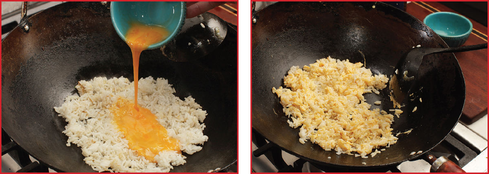
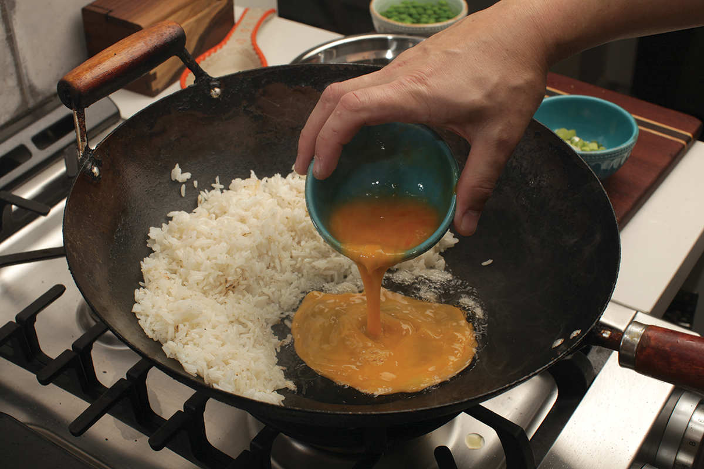
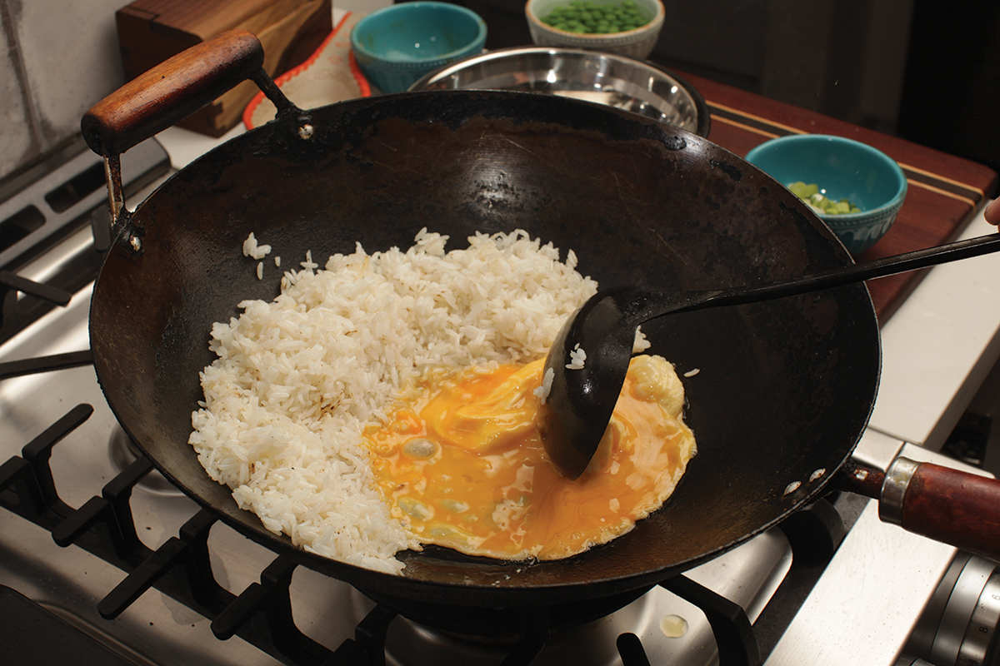
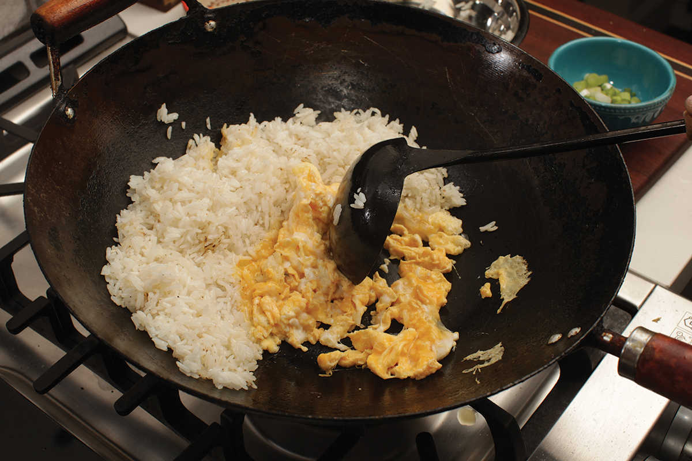
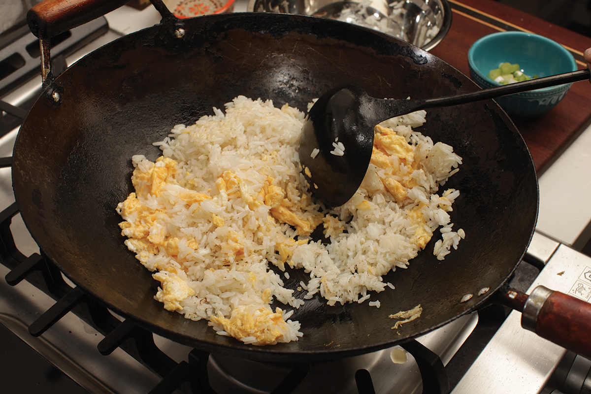
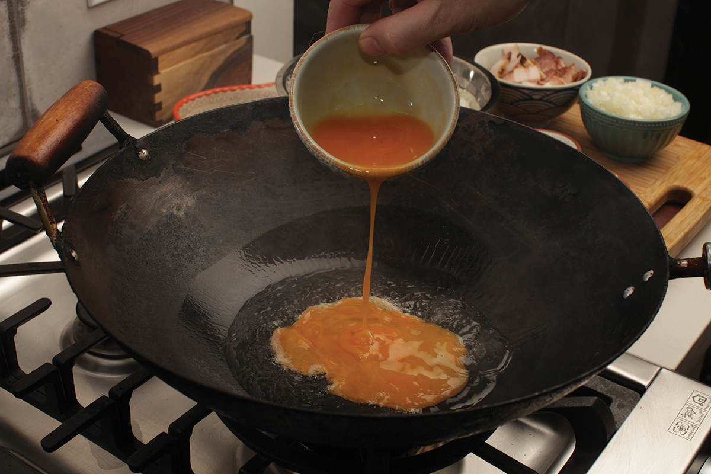
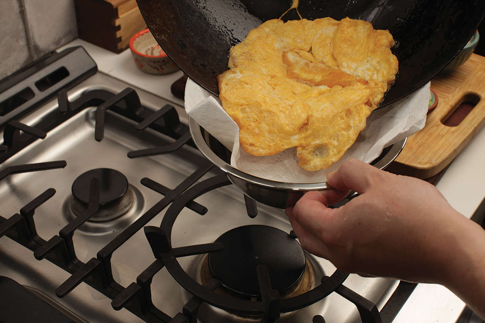
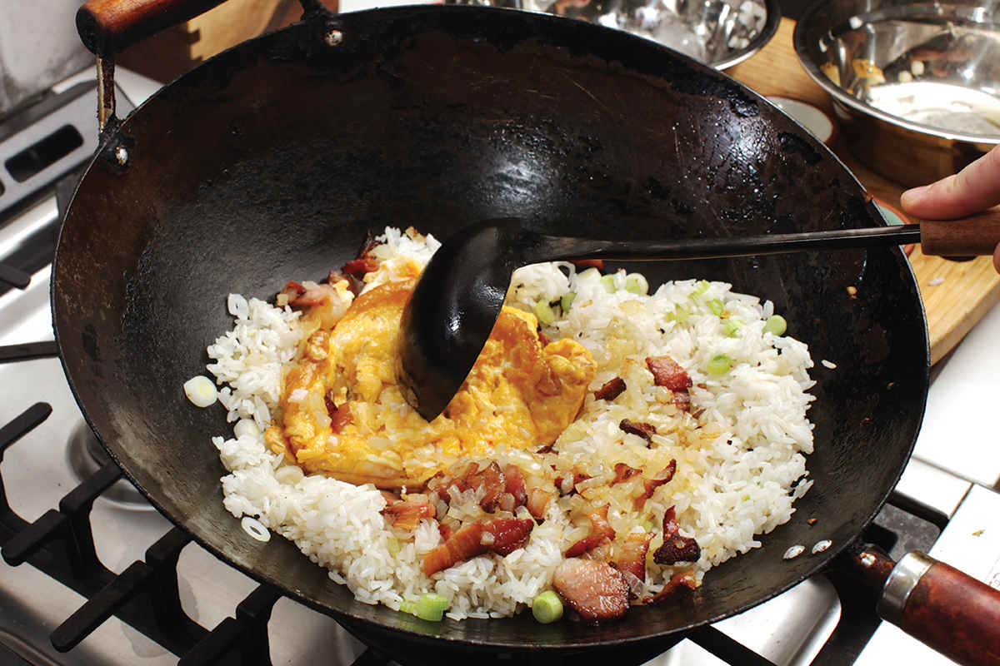
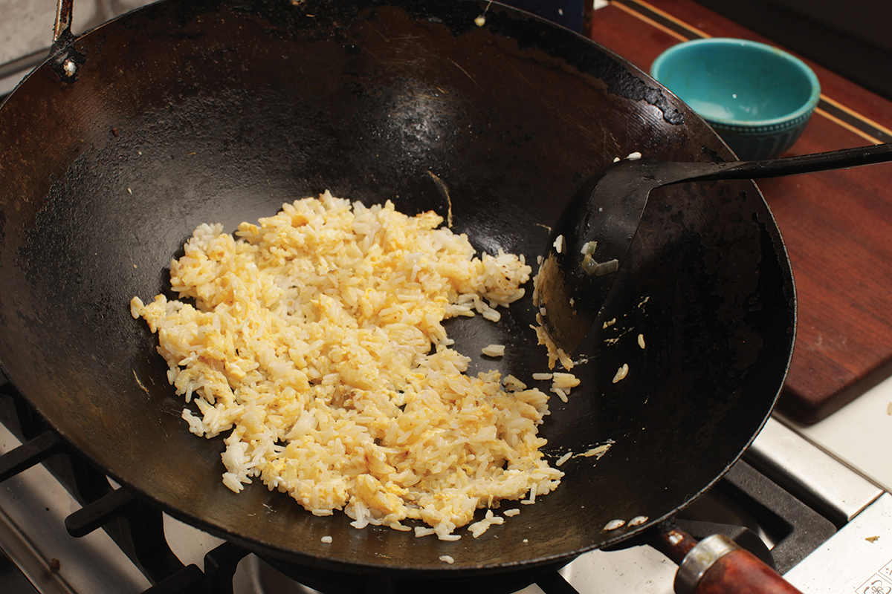

Adding Eggs to Fried Rice
There are three increasingly complex schools of thought when it comes to adding an egg to fried rice. None of them is the right way per se, and the method that requires the most effort is not necessarily better than the simplest. It’s all a matter of what end results you’re looking for.
Method 1 • Add the Egg Directly to the Rice
With this method, you crack a raw egg directly into the rice as it stir-fries. The egg ends up forming a thin coating over individual grains, melding into the finished dish and giving the rice a little bit more cohesion. This method is incredibly simple and foolproof.

Method 2 • Clear a Space for the Egg
After stir-frying the rice, you push it up the sides of the wok to reveal the bottom of the wok. You add a little oil, then crack the egg into it, scrambling it in the center of the wok and using your spatula or ladle to break it up into small pieces, eventually tossing them with the rice for even distribution.
This is the method I almost always use, as it is simple enough to do but gives you distinct bits of egg mixed together with the rice.




Method 3 • Cook the Egg Separately
This is the method favored by most restaurant-trained fried-rice chefs. You heat a good amount of oil in the bottom of the wok (enough to pool gently around the egg), then add very lightly beaten eggs directly to the hot oil, letting them puff, sputter, and brown, before removing it from the wok, adding your other ingredients, and continuing with the stir-fry. The egg goes back in at the end to get chopped up and incorporated. In some fancy restaurants, you’ll even find fried rice with egg whites and yolks that have been cooked separately to give you more variation in flavor. When done correctly, the eggs come out poofy and light, leading to a dish that is much airier and lighter than with either of the other methods.



